=== image1 (n = 1000, p = 100) ===
1. Error(k = p) = 4.1487e-12 vs ||X||_F = 705.46 -> relative 5.88e-15
2. max_k |Error(k) - sqrt(sum lambda_{k+1..p})| = 4.1487e-12
e.g. k = 5 : Error = 303.387356 , sqrt(tail) = 303.387356
3. Error monotone non-increasing: TRUE (largest step up = -2.443e+00)Image Compression with Principal Components
Rank-k approximation on the uncentered cross product X’X
What this page is
Each of the four images below is a numeric matrix \(X\), one entry per pixel, \(n\) rows by \(p\) columns. I decompose each one without centering or scaling,
\[V = X'X, \qquad V = U \Lambda U', \qquad Z = XU, \qquad X = ZU'\]
and then throw away all but the first \(k\) components:
\[X_{(k)} = z_1u_1' + z_2u_2' + \cdots + z_ku_k', \qquad \text{Error}(k) = \lVert X - X_{(k)} \rVert_F .\]
Because \(U\) is orthonormal, \(UU' = I\) and \(X = ZU'\) holds exactly, so setting \(k = p\) hands back the original image untouched. Any smaller \(k\) drops the directions that contribute least to \(\operatorname{trace}(X'X)\), and the whole question is how many of them you can drop before you notice.
It matters that nothing is centered. prcomp() subtracts column means by default, and once it does, \(ZU'\) reconstructs \(X\) minus those means rather than \(X\) itself, so the reconstruction is no longer the image. Everything here goes through eigen(crossprod(x), symmetric = TRUE) instead.
A note on the data, since it changes how the plots read: these pixel values aren’t on a 0-255 scale. They’re roughly zero-centered floats, some negative. That means \(X'X\) is picking up energy, or distance from mid-grey, rather than brightness, which is why the first eigenvector doesn’t always look like an average column the way you might expect.
Part 1: the compression function
Here is R/pca_compress.R in full.
pca_decomp <- function(x) {
if (!is.matrix(x) || !is.numeric(x)) {
stop("`x` must be a numeric matrix.", call. = FALSE)
}
if (anyNA(x)) {
stop("`x` contains NA/NaN; eigen() cannot handle missing pixels.", call. = FALSE)
}
V <- crossprod(x)
e <- eigen(V, symmetric = TRUE)
lambda <- pmax(e$values, 0)
list(U = e$vectors, lambda = lambda, Z = x %*% e$vectors)
}
pca_compress <- function(x, k, decomp = NULL) {
if (!is.matrix(x) || !is.numeric(x)) {
stop("`x` must be a numeric matrix.", call. = FALSE)
}
p <- ncol(x)
if (p == 0L || nrow(x) == 0L) {
stop("`x` must have at least one row and one column.", call. = FALSE)
}
if (!is.numeric(k) || length(k) != 1L || is.na(k)) {
stop("`k` must be a single non-missing number.", call. = FALSE)
}
if (k != as.integer(k)) {
stop("`k` must be a whole number.", call. = FALSE)
}
k <- as.integer(k)
if (k < 1L || k > p) {
stop(sprintf("`k` must be between 1 and ncol(x) = %d; got %d.", p, k),
call. = FALSE)
}
if (is.null(decomp)) {
decomp <- pca_decomp(x)
} else if (!all(c("U", "lambda", "Z") %in% names(decomp)) ||
ncol(decomp$U) != p || nrow(decomp$Z) != nrow(x)) {
stop("`decomp` does not match `x`; pass pca_decomp(x) or leave it NULL.",
call. = FALSE)
}
Zk <- decomp$Z[, seq_len(k), drop = FALSE]
Uk <- decomp$U[, seq_len(k), drop = FALSE]
xk <- Zk %*% t(Uk)
list(
approximation = xk,
error = norm(x - xk, type = "F"),
k = k,
decomp = decomp
)
}
pca_error_curve <- function(x, decomp = NULL) {
if (is.null(decomp)) decomp <- pca_decomp(x)
p <- ncol(x)
resid <- x
err <- numeric(p)
for (k in seq_len(p)) {
resid <- resid - tcrossprod(decomp$Z[, k], decomp$U[, k])
err[k] <- norm(resid, type = "F")
}
err
}
pca_compression_ratio <- function(n, p, k) {
stored <- (n + p) * k
original <- n * p
list(stored = stored,
original = original,
ratio = stored / original,
saving = 1 - stored / original)
}pca_compress(x, k) is the piece the assignment asks for. It checks its inputs, decomposes \(X'X\), truncates to \(k\) components and returns both the rank-\(k\) matrix and its Frobenius error. Input validation rejects a non-numeric or non-matrix x, a k that isn’t a single whole number, and any k outside \(1 \le k \le p\). The approximation itself is the one-line matrix product Z[, 1:k] %*% t(U[, 1:k]), with drop = FALSE so that \(k = 1\) stays a matrix instead of collapsing to a vector.
The other three functions exist for speed and convenience:
pca_decomp(x)does the eigendecomposition and returnsU,lambdaandZ = XU. You can hand the result back topca_compress()through itsdecompargument, which matters here because this page needs an error for every \(k\) from 1 to \(p\) and redoing an \(O(p^3)\) eigendecomposition a few hundred times would be silly.crossprod(x)is used rather thant(x) %*% xbecause it’s about twice as fast, andsymmetric = TRUEforces the real-symmetric LAPACK routine, which guarantees a genuinely orthonormal \(U\) and returns the eigenvalues already sorted largest first.pca_error_curve(x)walks \(k\) from 1 to \(p\) accumulating rank-one updates, \(X_{(k)} = X_{(k-1)} + z_ku_k'\). Rebuilding each approximation from scratch would cost \(O(np^3)\) across the sweep; this way it’s \(O(np^2)\). These are realnorm(..., type = "F")values on the residual, not the \(\sqrt{\sum \lambda}\) shortcut, which is the point of the second check below.pca_compression_ratio(n, p, k)is the storage arithmetic: \((n+p)k\) numbers kept against \(np\) in the raw image.
Does it actually work?
Three things have to be true, and all three are checked on the real data rather than asserted:
Keeping every component reproduces the image to fifteen significant figures, the Frobenius error agrees with the square root of the discarded eigenvalues to within floating-point noise, and the error never goes up as \(k\) grows. There’s also a separate test file, tests/test_pca_compress.R, that runs seventeen checks on throwaway matrices, including the input validation and both the \(n < p\) and \(n > p\) cases.
Part 2: the images
image1
1000 rows by 100 columns, values running from -4.17 to 22.5. The first component carries 80.19% of trace(X'X), and the first ten carry 83.04%.
The original, then k = 1 through 10
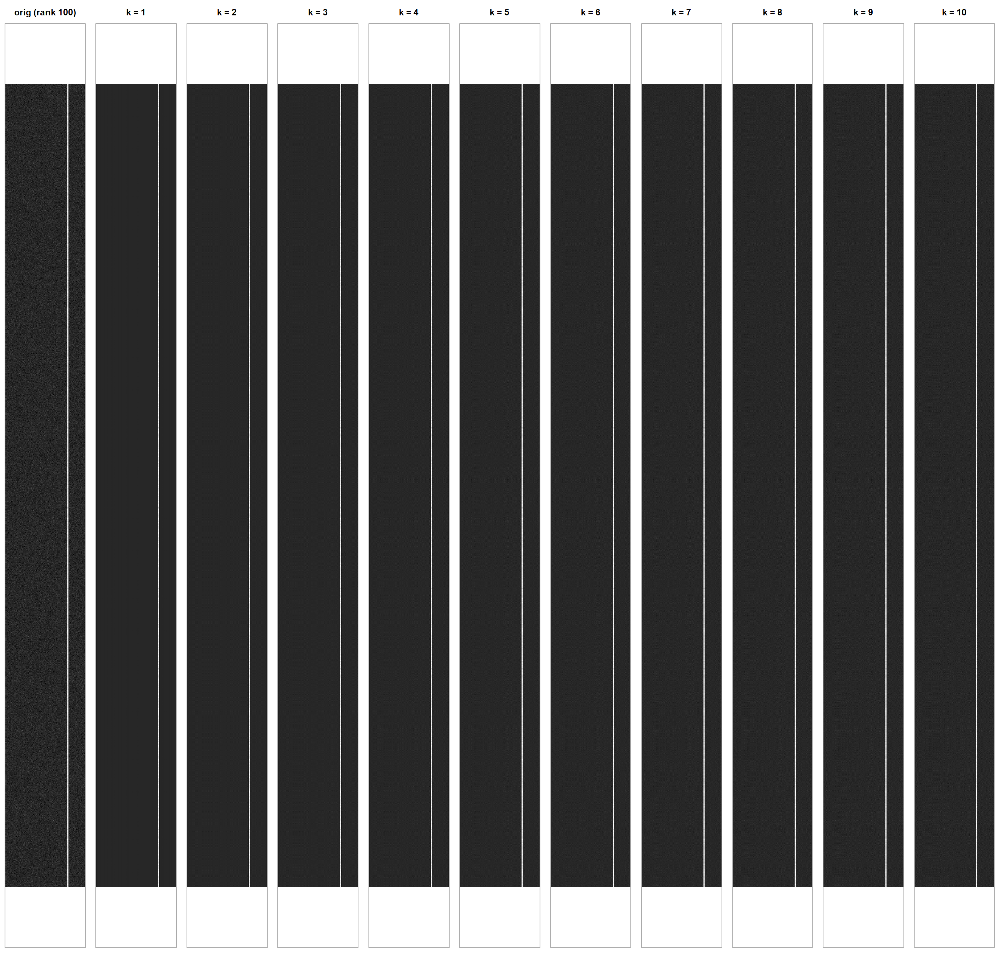
Every panel is drawn on the original image’s grey scale, so what you see is a like-for-like comparison. A side effect is that where a reconstruction overshoots past the original’s brightest pixel, it clips to pure white.
Going past k = 10
Ten components isn’t always enough to judge where to stop, so here is the same image at a wider spread of \(k\), finishing at \(k = p\), which is exact.
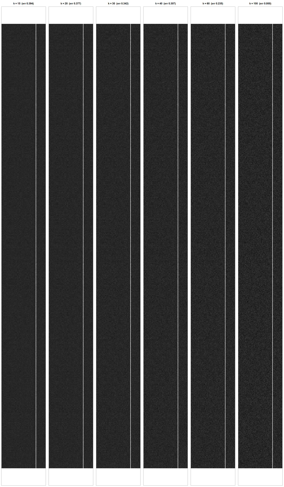
Titles give \(\text{Error}(k)\) as a fraction of \(\lVert X \rVert_F\).
Error at every k from 1 to 100
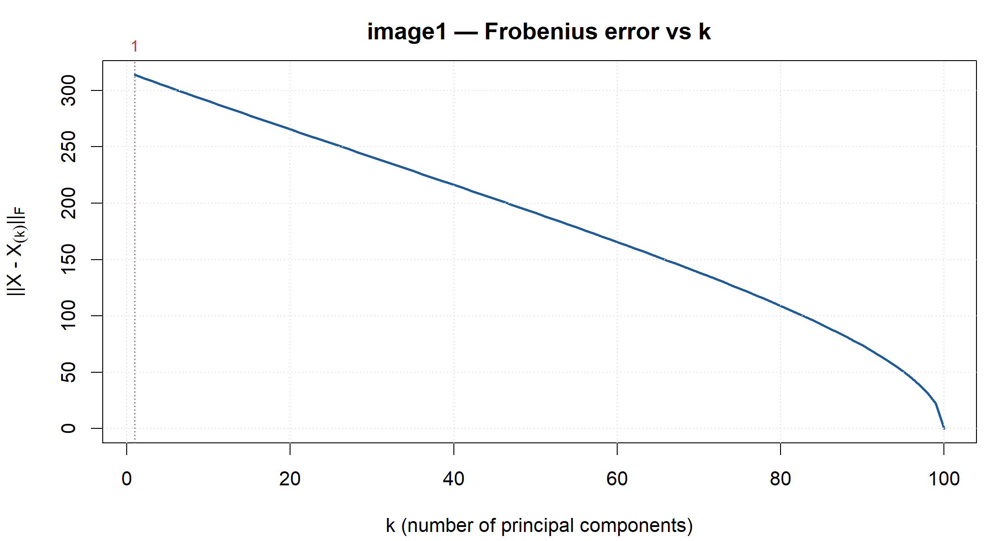
| k | Error(k) | % of Error(1) | rel. residual | storage vs raw |
|---|---|---|---|---|
| 1 | 313.96 | 100.0% | 0.4450 | 1.1% |
| 2 | 311.28 | 99.1% | 0.4412 | 2.2% |
| 3 | 308.62 | 98.3% | 0.4375 | 3.3% |
| 5 | 303.39 | 96.6% | 0.4301 | 5.5% |
| 10 | 290.56 | 92.5% | 0.4119 | 11.0% |
| 20 | 265.64 | 84.6% | 0.3765 | 22.0% |
| 40 | 216.36 | 68.9% | 0.3067 | 44.0% |
| 80 | 108.95 | 34.7% | 0.1544 | 88.0% |
| 100 | 0.00 | 0.0% | 0.0000 | 110.0% |
The first eigenvector and the first score vector
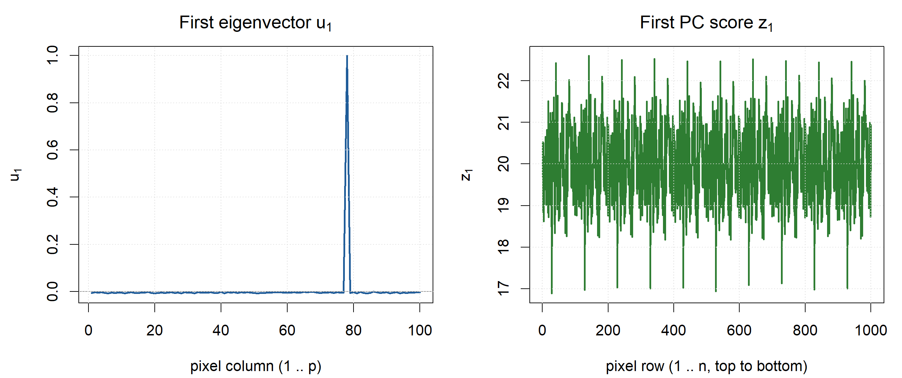
Numbers behind those two curves, which the discussion below refers back to:
u1 : 1.0% of its 100 entries are positive; range [-0.0079, 0.9989];
largest-magnitude entry at column 78; dispersion sd/mean|u1| = 6.935
z1 : range [16.9, 22.6]; largest magnitude at row 141; minimum at row 28
(rows are numbered from the top of the image)Reading u1 and z1
u1 isn’t really a profile. It’s a spike. For 99 of the 100 pixel columns it sits within rounding distance of zero, hugging the axis somewhere between -0.008 and 0.008, and then at column 78 it jumps to 0.9989. The next largest entry anywhere in the vector is 0.0079, smaller by a factor of 126. When a unit eigenvector puts essentially all of its length on a single coordinate, it’s telling you the dominant column profile is that one column and nothing else.
z1 says the same thing from the other side. It’s a flat band of noise centred on 19.95 with a standard deviation of only 0.96, drifting between about 17 and 22.6 with no trend and no visible structure from the first row to the thousandth. Since z1 measures how strongly each row expresses u1, a constant z1 means every row expresses it equally. Column 78 is uniformly bright the whole way down, and the small wobble in z1 is just that column’s own noise.
So the rank-1 approximation is a single vertical stripe, and that really is all the structure this image has. The column means confirm it: column 78 averages 19.93 while every other column averages somewhere between -0.16 and 0.00, and all 100 columns have a standard deviation near 1. This is standard normal noise with a constant of about 20 added to one column. The k = 1 panel shows that stripe, and k = 2 through 10 are indistinguishable from it, because after the first component there’s nothing left but noise to fit.
How far would I go with k?
k = 1, and I’d argue it’s the only defensible answer here. Not because the reconstruction is good, but because nothing better is on offer at any price.
The error curve makes the case. Error(1) is already down to 0.445 of \(\lVert X \rVert_F\), so that one stripe accounts for 55% of the image’s total magnitude in a single step. After that the curve is a straight line. It sheds roughly 0.86% of its remaining height per component from k = 1 to k = 6, drifts down more or less linearly through the middle, and only falls off a cliff in the last handful of components. There’s no elbow anywhere, no point where it flattens out and tells you to stop. A straight error curve is what isotropic noise looks like: every remaining direction holds about the same energy, so no place to cut is better than any other.
The eigenvalues put it more bluntly. \(\lambda_1 = 3.99 \times 10^5\) against \(\lambda_2 = 1.68 \times 10^3\), a 238-fold gap, and then \(\lambda_2\) through \(\lambda_6\) come in at 1680, 1650, 1610, 1590 and 1590, which is to say they’re all the same number. One real component, ninety-nine noise components.
Two more reasons to stay put. Visually, the k = 15 through k = 60 panels look like k = 1, because you can’t see noise being reconstructed at this scale, so extra components buy nothing you can perceive. And the storage arithmetic caps the whole exercise anyway: \((n+p)k / np = 1100k / 100{,}000\) crosses 100% at k = 91, meaning from there on the compressed form is bigger than the image it replaces. Even at the very top of the usable range the error has only fallen from 0.445 to about 0.12, which is nowhere near faithful.
k = 1 costs 1.1% of the original storage and captures everything that’s actually there. Everything after it is paying full freight to memorise noise.
image2
1000 rows by 100 columns, values running from -694 to 615. The first component carries 100.00% of trace(X'X), and the first ten carry 100.00%.
The original, then k = 1 through 10
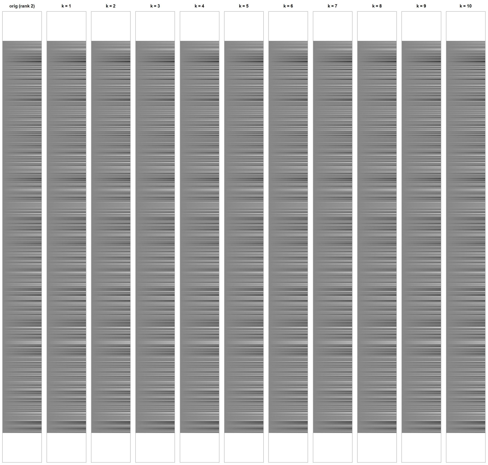
Every panel is drawn on the original image’s grey scale, so what you see is a like-for-like comparison. A side effect is that where a reconstruction overshoots past the original’s brightest pixel, it clips to pure white.
Going past k = 10
Ten components isn’t always enough to judge where to stop, so here is the same image at a wider spread of \(k\), finishing at \(k = p\), which is exact.
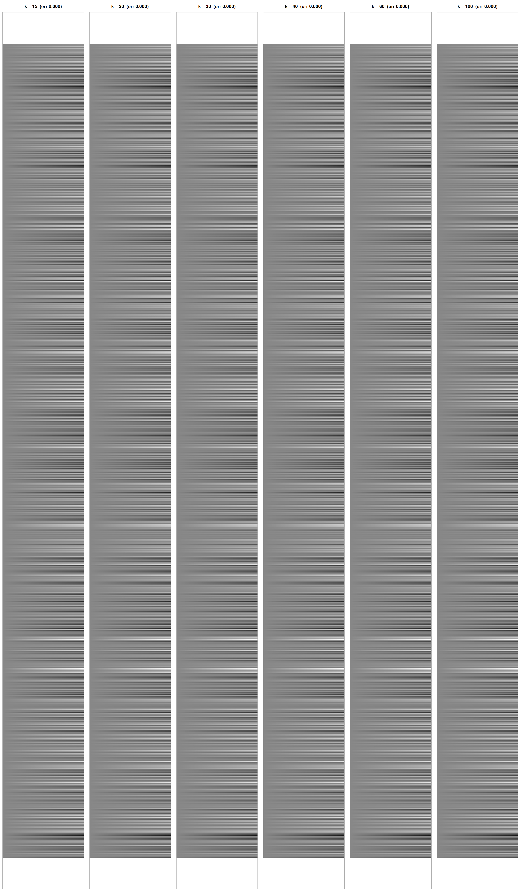
Titles give \(\text{Error}(k)\) as a fraction of \(\lVert X \rVert_F\).
Error at every k from 1 to 100
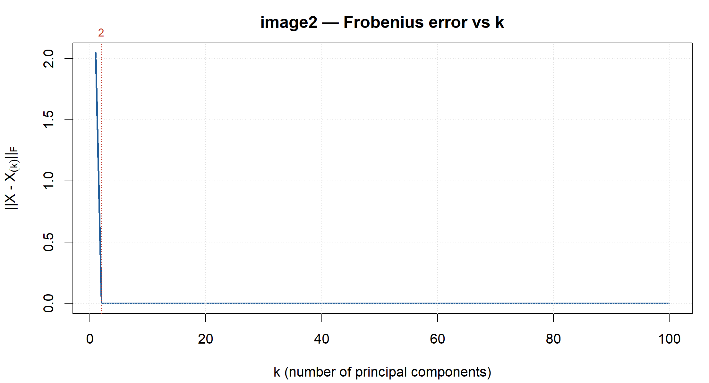
| k | Error(k) | % of Error(1) | rel. residual | storage vs raw |
|---|---|---|---|---|
| 1 | 2.05 | 100.0% | 0.0001 | 1.1% |
| 2 | 0.00 | 0.0% | 0.0000 | 2.2% |
| 3 | 0.00 | 0.0% | 0.0000 | 3.3% |
| 5 | 0.00 | 0.0% | 0.0000 | 5.5% |
| 10 | 0.00 | 0.0% | 0.0000 | 11.0% |
| 20 | 0.00 | 0.0% | 0.0000 | 22.0% |
| 40 | 0.00 | 0.0% | 0.0000 | 44.0% |
| 80 | 0.00 | 0.0% | 0.0000 | 88.0% |
| 100 | 0.00 | 0.0% | 0.0000 | 110.0% |
The first eigenvector and the first score vector
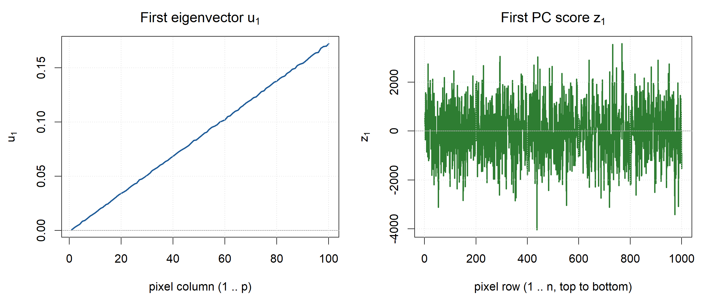
Numbers behind those two curves, which the discussion below refers back to:
u1 : 100.0% of its 100 entries are positive; range [0.0006, 0.1722];
largest-magnitude entry at column 100; dispersion sd/mean|u1| = 0.580
z1 : range [-4033.8, 3570.3]; largest magnitude at row 437; minimum at row 437
(rows are numbered from the top of the image)Reading u1 and z1
u1 is a straight line. It climbs from 0.0006 at column 1 to 0.1722 at column 100 with no curvature I can see, and regressing it on the column index gives an \(R^2\) of 0.99992. Every entry is positive. The dominant column profile is just a ramp from left to right: whatever a row contains, it contains a lot more of it at the right edge than at the left.
z1 is the opposite in character. It’s row-to-row noise, swinging between -4034 and 3570 with a standard deviation of 1188 and a lag-1 autocorrelation of 0.02, meaning one row tells you nothing at all about the next. It takes both signs freely.
Together those two explain the banding you can see in the original. Every row is the same ramp, scaled by its own random number. Rows with a positive z1 run dark on the left to bright on the right, rows with a negative z1 run the other way, and rows near zero come out flat grey. Stack a thousand of those in random order and you get exactly the dense horizontal striping the image shows. The correlation between z1 and the row means is 1.0000, so z1 is nothing more than each row’s overall level.
This image is an outer product with a bit of dressing: a random row vector times a linear column ramp.
How far would I go with k?
k = 2, and for once this isn’t really a judgment call. It’s a fact about the matrix.
The rank of \(X\) is 2. The eigenvalues go \(\lambda_1 = 1.41 \times 10^9\), \(\lambda_2 = 4.2\), and then \(\lambda_3 = 1.09 \times 10^{-7}\), which is a drop of eight orders of magnitude into what is plainly floating-point dust. Error(2) comes out at \(3.5 \times 10^{-9}\) against \(\lVert X \rVert_F = 37{,}539\), so two components reproduce the image exactly as far as double precision can tell. The error curve is flat on the floor from k = 2 onward and the k = 3 through 10 panels aren’t approximations of anything, they’re the original.
The question worth asking is whether k = 1 would do, and visually it would. Error(1) is 2.05 in absolute terms, which is 0.0055% of \(\lVert X \rVert_F\), and the k = 1 panel is indistinguishable from the original by eye. That second component is carrying a correction small enough that nobody would miss it.
I’d still take k = 2, because exactness is nearly free. k = 1 stores 1,100 numbers, or 1.1% of the raw 100,000; k = 2 stores 2,200, or 2.2%. For an extra 1,100 numbers, about a hundredth of the original image, the approximation stops being an approximation at all. Choosing the lossy version to save 1.1% strikes me as a bad trade.
One thing worth noticing next to image1. Both matrices are 1000 by 100, and in both the first component dominates the trace. The difference is what’s left behind: here the remaining 98 directions are genuinely empty, there they were full of noise. It’s the size of the gap between \(\lambda_1\) and \(\lambda_2\) that separates the two cases, not the share the first component holds.
image3
376 rows by 345 columns, values running from -2.2 to 1.52. The first component carries 61.78% of trace(X'X), and the first ten carry 95.17%.
The original, then k = 1 through 10
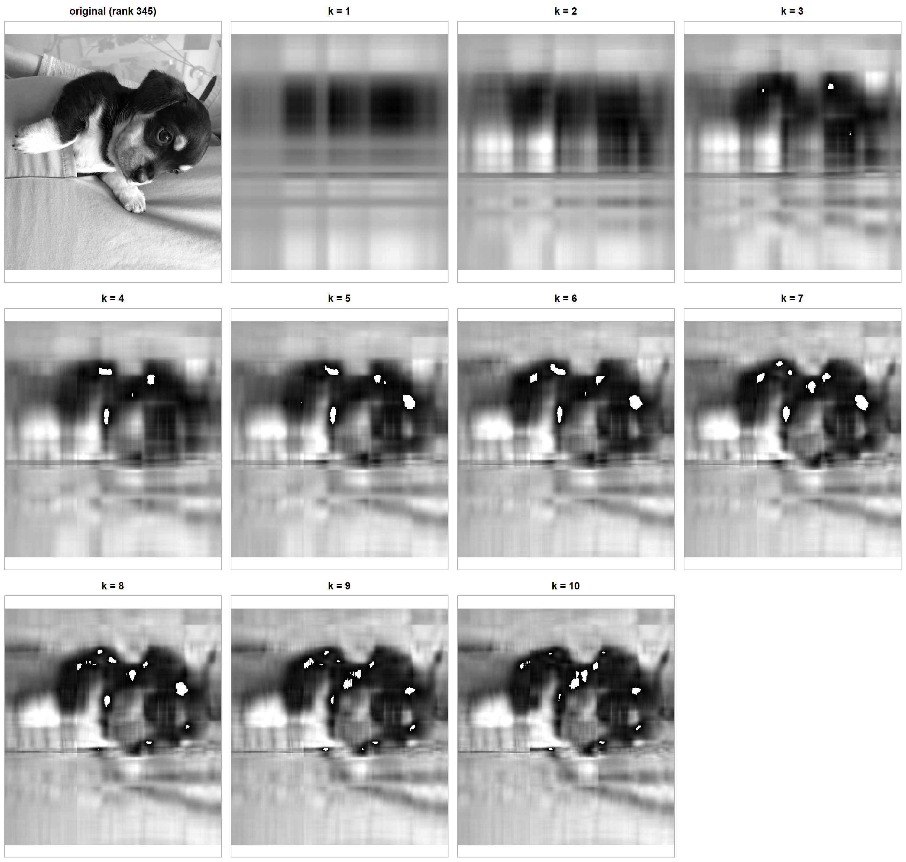
Every panel is drawn on the original image’s grey scale, so what you see is a like-for-like comparison. A side effect is that where a reconstruction overshoots past the original’s brightest pixel, it clips to pure white.
Going past k = 10
Ten components isn’t always enough to judge where to stop, so here is the same image at a wider spread of \(k\), finishing at \(k = p\), which is exact.
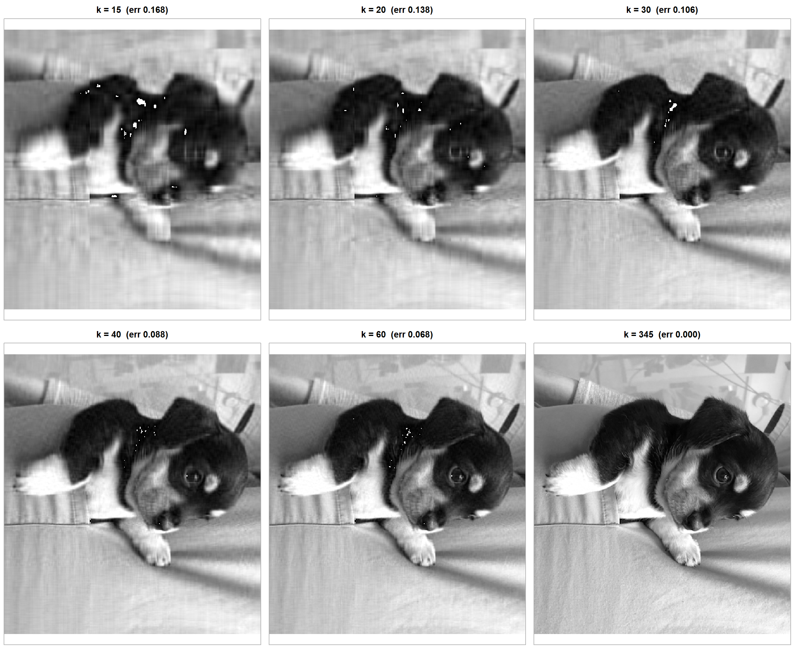
Titles give \(\text{Error}(k)\) as a fraction of \(\lVert X \rVert_F\).
Error at every k from 1 to 345
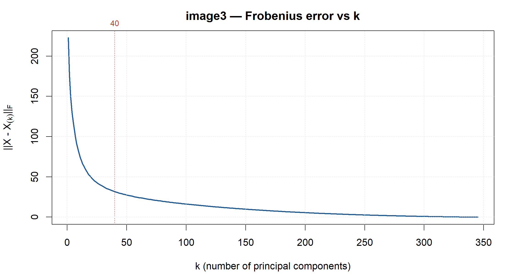
| k | Error(k) | % of Error(1) | rel. residual | storage vs raw |
|---|---|---|---|---|
| 1 | 222.67 | 100.0% | 0.6182 | 0.6% |
| 2 | 176.02 | 79.1% | 0.4887 | 1.1% |
| 3 | 150.01 | 67.4% | 0.4165 | 1.7% |
| 5 | 119.30 | 53.6% | 0.3312 | 2.8% |
| 10 | 79.13 | 35.5% | 0.2197 | 5.6% |
| 20 | 49.56 | 22.3% | 0.1376 | 11.1% |
| 40 | 31.70 | 14.2% | 0.0880 | 22.2% |
| 80 | 19.79 | 8.9% | 0.0550 | 44.5% |
| 345 | 0.00 | 0.0% | 0.0000 | 191.8% |
The first eigenvector and the first score vector
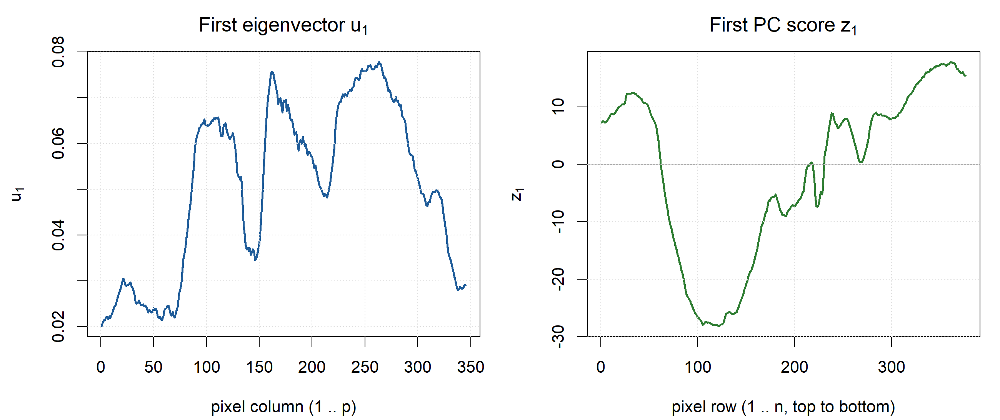
Numbers behind those two curves, which the discussion below refers back to:
u1 : 100.0% of its 345 entries are positive; range [0.0201, 0.0778];
largest-magnitude entry at column 263; dispersion sd/mean|u1| = 0.360
z1 : range [-28.2, 17.8]; largest magnitude at row 122; minimum at row 122
(rows are numbered from the top of the image)Reading u1 and z1
This one is an actual photograph, a puppy lying against a sleeve and a light bedspread, so unlike the first two images the leading component is describing real picture content.
u1 stays positive across all 345 columns but swings by about a factor of four, from 0.0201 up to 0.0778. The shape is what’s interesting. It’s low and fairly flat, around 0.020 to 0.030, across columns 1 to 75, then climbs steeply and stays high through the middle of the frame: a broad plateau near 0.065 around columns 90 to 130, a peak of 0.075 at column 162, a dip to 0.048 near column 213, its maximum of 0.0778 at column 263, and then a slide back down to 0.029 at the right edge. Line those ranges up against the original and they make sense. The quiet left-hand region is the evenly lit bedding and sleeve; the raised middle and right is where the dog actually is.
Worth remembering that the pixel values here are roughly zero-centred, running from -2.20 to 1.52, so \(X'X\) is measuring energy rather than brightness. That means u1 reads as a contrast profile. It’s large exactly where a column contains strong departures from mid-grey, which is the dark fur and the white chest and paw, and small where a column is uniformly mid-toned.
z1 is much easier to read. It’s essentially row brightness, correlating 0.9963 with the row means. It starts at 7, rises to about 12 by row 30, crosses zero near row 62, drops to its minimum of -28 somewhere around rows 100 to 130, climbs back through zero near row 215, wobbles for a while, then rises steadily to 17 by the bottom of the frame. That’s a fair description of the photograph read top to bottom: light background up top, the dark mass of the dog filling the band from roughly row 62 to row 215, and the bright bedspread across the bottom third. The longest unbroken run of negative z1 is rows 62 to 215, 154 rows, which is the dog.
So the rank-1 image is a horizontal three-band brightness pattern, light then dark then light, modulated by a fixed left-to-right contrast profile. That’s precisely what the k = 1 panel looks like: no shapes at all, just banding. The dog’s outline doesn’t show up until k = 3 or 4, and the eye and muzzle not until around k = 8.
How far would I go with k?
I’d stop at k = 40.
There’s no sharp elbow in this error curve. It’s a smooth convex decay, which is what you get from a natural photograph, because real images spread their energy across many scales instead of concentrating it in a few directions. So the decision has to come from looking at the pictures, with the curve as a check.
Working through the panels: k = 10, at a relative error of 0.220, is clearly a dog but soft, with obvious vertical banding and a face you can’t resolve. k = 20 at 0.138 has a readable eye, but the fur is smeared and the bedding is visibly striped. k = 30 at 0.106 is the first panel I’d call a good likeness, with the eye, muzzle, ear boundary and the fold in the bedspread all in the right place. k = 40 at 0.088 tidies up what k = 30 leaves behind: the residual banding in the bedding mostly goes away and fur texture starts to be there rather than merely implied. Beyond that the returns collapse. k = 60 at 0.068 is better on fine texture, but I had to put the two side by side to see it, and it isn’t a difference that would change what anyone could tell you about the photo.
The storage numbers point the same way. With \(n = 376\) and \(p = 345\), storage is \(721k / 129{,}720\), so k = 20 costs 11.1% of the raw image, k = 30 costs 16.7%, k = 40 costs 22.2% and k = 60 costs 33.4%. Going from 30 to 40 buys a visible improvement for 5.5 points of storage. Going from 40 to 60 costs another 11 points for something I can barely make out. That asymmetry is where I’d draw the line.
Break-even, where the compressed form stops being smaller than the original, lands at \(k = np/(n+p) = 180\), so k = 40 leaves plenty of headroom. This image compresses genuinely well: a 78% cut in stored numbers for an 8.8% Frobenius error and a picture that still reads as the same photograph.
One caveat that’s visible in the panels and worth saying out loud. Scattered pure-white speckles appear in the dark fur from k = 4 onward and are still there at k = 60. They aren’t a plotting artefact. They’re places where the reconstruction overshoots above the original’s brightest pixel, and since every panel is drawn on the original’s grey scale they clip to white. They shrink as k grows, and they’re a reminder that a rank-k approximation isn’t constrained to stay inside the original range of values.
image4
213 rows by 119 columns, values running from -2.66 to 6.41. The first component carries 40.50% of trace(X'X), and the first ten carry 93.94%.
The original, then k = 1 through 10
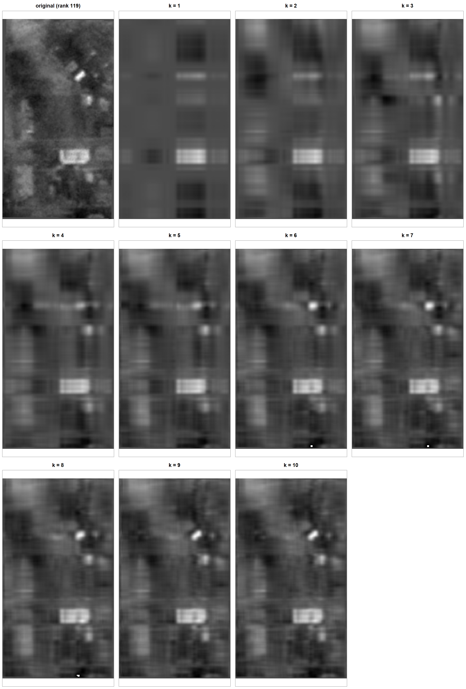
Every panel is drawn on the original image’s grey scale, so what you see is a like-for-like comparison. A side effect is that where a reconstruction overshoots past the original’s brightest pixel, it clips to pure white.
Going past k = 10
Ten components isn’t always enough to judge where to stop, so here is the same image at a wider spread of \(k\), finishing at \(k = p\), which is exact.
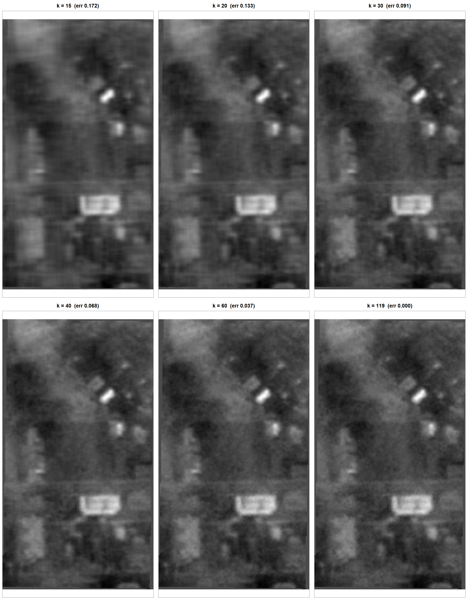
Titles give \(\text{Error}(k)\) as a fraction of \(\lVert X \rVert_F\).
Error at every k from 1 to 119
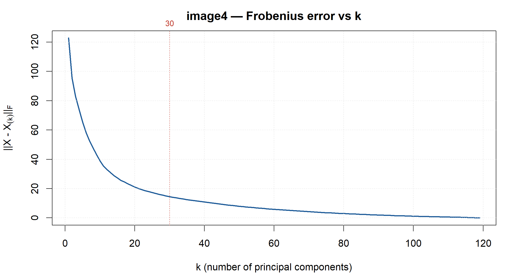
| k | Error(k) | % of Error(1) | rel. residual | storage vs raw |
|---|---|---|---|---|
| 1 | 122.81 | 100.0% | 0.7714 | 1.3% |
| 2 | 95.42 | 77.7% | 0.5993 | 2.6% |
| 3 | 83.08 | 67.6% | 0.5218 | 3.9% |
| 5 | 65.57 | 53.4% | 0.4119 | 6.5% |
| 10 | 39.19 | 31.9% | 0.2462 | 13.1% |
| 20 | 21.18 | 17.2% | 0.1330 | 26.2% |
| 40 | 10.84 | 8.8% | 0.0681 | 52.4% |
| 80 | 3.01 | 2.4% | 0.0189 | 104.8% |
| 119 | 0.00 | 0.0% | 0.0000 | 155.9% |
The first eigenvector and the first score vector
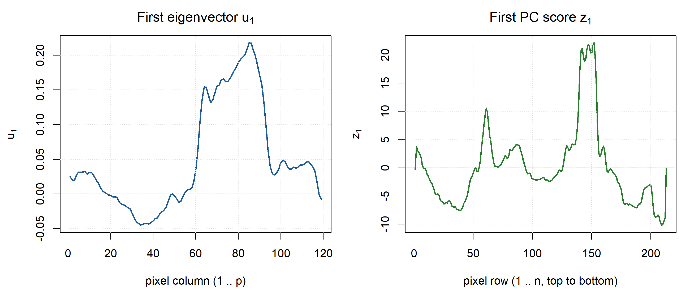
Numbers behind those two curves, which the discussion below refers back to:
u1 : 68.9% of its 119 entries are positive; range [-0.0449, 0.2179];
largest-magnitude entry at column 85; dispersion sd/mean|u1| = 1.202
z1 : range [-10.1, 22.1]; largest magnitude at row 152; minimum at row 209
(rows are numbered from the top of the image)Reading u1 and z1
This is an overhead view: a diagonal track running from the upper right down toward the lower left across textured ground, with a bright elongated object sitting on it and a larger bright rectangle carrying dark markings lower in the frame.
u1 has the most structure of the four, and it’s the only one that changes sign. It opens near 0.03 for columns 1 to 15, falls through zero around column 18, bottoms out at -0.045 across columns 33 to 40, comes back to zero near column 55, then rises very steeply to 0.155 by column 64 and on to its maximum of 0.218 at column 85, five times the size of anything in the left half, before dropping just as sharply back to 0.03 by column 96 and drifting near 0.045 out to the right edge. Only 68.9% of its entries are positive.
A signed eigenvector is doing something different from the first three images. It’s encoding a contrast between two bands of columns rather than a profile they share. The narrow high-magnitude band at columns 60 to 95 is where both bright objects sit, and the negative lobe at columns 33 to 40 is the darker ground off to their left. The first component is effectively saying that these columns are bright when those ones are dark. That fits with the correlation between u1 and the column means being 0.026, which is to say nothing at all. Unlike image3, this leading component isn’t a brightness profile.
z1 is spiky rather than smooth. It hovers between -8 and 4 through most of the frame, with a sharp isolated peak of 10.5 at row 61 and a much bigger plateau reaching 22 across rows 140 to 155, then falls to -10 by row 210. Those two positive excursions are the two bright objects, the elongated one on the track near the top and the large marked rectangle below it. 61% of rows have a negative z1, so the default state of a row is no bright object, and z1 only fires where there is one.
Read together, the rank-1 approximation is a bright horizontal bar at the rows and columns where the largest bright object lives, which is exactly what the k = 1 panel gives you: the rectangle shows up as a crude glowing strip before any terrain is visible at all.
How far would I go with k?
I’d stop at k = 30, and here it’s the storage cost rather than the picture that decides it.
This is the hardest of the four to compress, and the eigenvalues explain why. The first component holds only 40.5% of \(\operatorname{trace}(X'X)\), against 61.8% for image3 and over 80% for the two synthetic matrices. The content is mostly high-frequency ground texture, which isn’t low-rank in any direction. It takes 10 components to reach 93.9% and 20 to reach 98.2%.
Visually the improvement is steady rather than sudden. k = 10, at a relative error of 0.246, gives you the bright objects and a vague sense of light and dark. k = 20 at 0.133 resolves them properly, but the ground is a smooth wash. k = 30 at 0.091 is where the diagonal track becomes a continuous, unmistakable feature and the small bright objects separate from one another. k = 40 at 0.068 brings the grainy ground texture back, and k = 60 at 0.037 is very close to the original.
If storage were free I’d take 40 or 60. It isn’t. With \(n = 213\) and \(p = 119\) this is a small, nearly square matrix, and \((n+p)k / np = 332k / 25{,}347\) grows fast: k = 20 costs 26.2% of the raw image, k = 30 costs 39.3%, k = 40 costs 52.4% and k = 60 costs 78.6%. Break-even, where the compressed form stops being smaller than just storing the pixels, arrives at only \(k = np/(n+p) = 76\). There’s far less room to work with here than in image3, where break-even sat at 180.
So k = 40 would mean paying half the original storage to get texture back, and k = 60 would mean paying nearly four fifths, which is close to pointless. k = 30 keeps every feature that carries information, the track, both bright objects and the broad light and dark regions, for 39% of the storage and a 9.1% Frobenius error. That’s the last point on this curve where compressing is still clearly worth doing, which is why I wouldn’t push higher on this image even though I happily would on image3.
Rebuilding this page
Rscript tests/test_pca_compress.R
quarto render